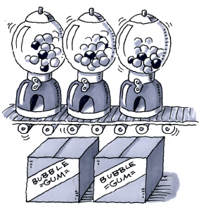
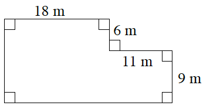
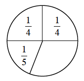
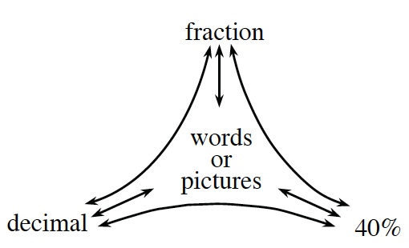
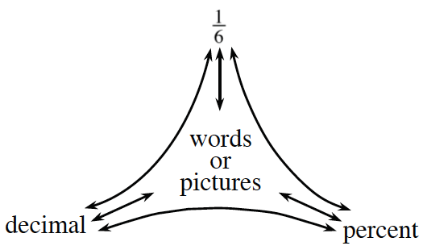
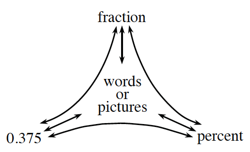
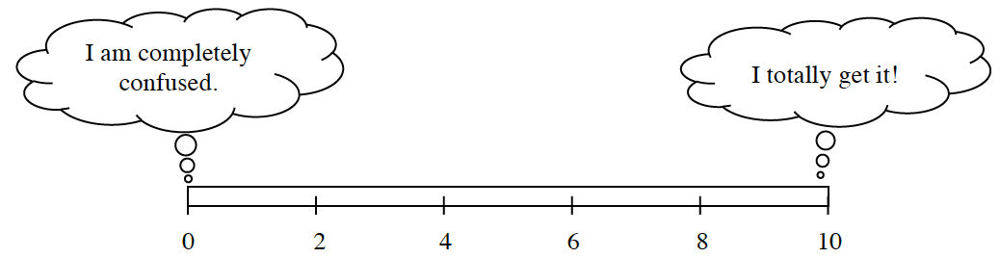
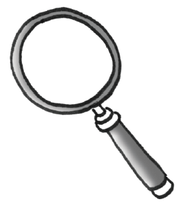

What have I learned?
Reflection and Synthesis
The activities below offer you a chance to reflect about what you have learned during this chapter. As you work, look for concepts that you feel very comfortable with, ideas that you would like to learn more about, and topics you need more help with.
1. SUMMARIZING MY UNDERSTANDING
This section gives you an opportunity to show what you know about the main math ideas in this chapter.
Candy Callipso, the CEO of the Moon & Mercury Candy Company, has a crisis! She has hired your team to help her solve a problem. A customer ordered a thousand bubblegum machines and specified that each one should have a probability of exactly for getting a blue gumball. The bubblegum machines were created and sent out, but the customer has called, claiming that the machines were filled incorrectly. Candy’s records show that each machine was filled with yellow gumballs, red gumballs, green gumballs, and blue gumballs.

Your Task: Work with your team to:
Figure out whether the machines meet the customer’s requirements.
If they do, find at least two other combinations of gumballs that would satisfy the picky customer.
If they do not, find at least two ways to adjust the contents of the machines so that the probability of getting a blue gumball is exactly .
Prepare a poster to report to Candy each of your proposed solutions. Be sure to explain how you know each solution will work.
2. WHAT HAVE I LEARNED?
Doing the problems in this section will help you to evaluate which types of problems you feel comfortable with and which ones you need more help with.
Solve each problem as completely as you can. The table at the end of this closure section provides answers to these problems. It also tells you where you can find additional help and where to find practice problems like them.
Vanson has a bunch of boxes that are all the same. He stacked four boxes, measured the stack, and found that it was three feet high.
How high will a stack of of these boxes be?
The ceiling in the room where Vanson is working is just a little more than feet high. He wants to stack boxes from the floor to the ceiling. How many boxes will fit in one stack?
Find the perimeter and area of Jacob’s swimming pool shown in the diagram below. Be sure to show all of your work.

Tuan is playing a game, but the spinner is incomplete. If the numbers in the sections of the spinner represent the probabilities of spinning each section, help him figure out the fraction for the missing section of the spinner.

Complete each portions web.



Add . Show all of your steps.
Write “theoretical” or “experimental” to describe the following situations.
The chance of rolling a sum of three with two number cubes is .
I drew five cards out of a deck and got clubs three times.
I bought six raffle tickets and did not win anything.
Based on a mathematical model, the chance of a flood next year is .
The county-fair prize wheel has equally spaced sections with the following colors: one is golden, two are silver, three are green, four are blue, six are red, and nine are yellow.
What is the probability of landing on gold? Give your answer as a fraction and as a percent.
If the probability of landing on yellow is , what is the probability of not landing on yellow?
If the wheel is spun times, how many times would you expect to land on silver?
Kimberly is playing “Guess My Number.” Her clue is, “When I triple my number and subtract , I get .” Find Kimberly’s number and explain how you know your answer is correct.
For each of the problems above, do the following:
Draw a bar or number line that represents to .

Color or shade in a portion of the bar that represents your level of understanding and comfort with completing that problem on your own.
If any of your bars are less than a , choose one of those problems and complete one of the following tasks:
Write two questions that you would like to ask about that problem.
Brainstorm two things that you DO know about that type of problem.
If all of your bars are a or above, choose one of those problems and do one of these tasks:
Write two questions you might ask or hints you might give to a student who was stuck on the problem.
Make a new problem that is similar and more challenging than that problem and solve it.
3. WHAT TOOLS CAN I USE?
You have several tools and references available to help support your learning: your teacher, your study team, your math book, and your Toolkit, to name only a few. At the end of each chapter, you will have an opportunity to review your Toolkit for completeness. You will also revise or update it to reflect your current understanding of big ideas.
The main elements of your Toolkit should be your Learning Logs, Math Notes, and the vocabulary used in this chapter. Math words that are new appear in bold in the text. Refer to the lists provided below and follow your teacher’s instructions to revise your Toolkit, which will help make it useful for you as you complete this chapter and as you work in future chapters.
Learning Log
Learning Log Entries
Lesson 1.1.4 – Beginning to Think About Proportional Relationships
Lesson 1.2.1 – Probability
Lesson 1.2.5 – Comparing Probabilities
Lesson 1.2.8 – Adding Probabilities with Unlike Denominators
Math Notes
Lesson 1.1.2 – Perimeter and Area
Lesson 1.1.3 – Mean
Lesson 1.1.4 – Median
Lesson 1.1.5 – Representations of Portions
Lesson 1.2.2 – Scaling Axes
Lesson 1.2.3 – Probability Vocabulary and Definitions
Lesson 1.2.5 – Multiplicative Identities
Lesson 1.2.8 – Equivalent Fractions
Mathematical Vocabulary
The following is a list of vocabulary found in this chapter. Make sure that you are familiar with the terms below and know what they mean. Click on any word for a “pop-up” definition. For more information, refer to the index. You might also add these words to your Toolkit so that you can reference them in the future.

area
compound events
desired outcomes
equivalent fractions
experimental probability
lowest common denominator
interval
mean
measure of central tendency
median
multiplicative identity
outcome
outliers
parallelogram
percent
perimeter
possible outcomes
probability
proportional relationship
rectangle
repeating decimal
sample space
scaling
terminating decimal
theoretical probability
trapezoid
triangle